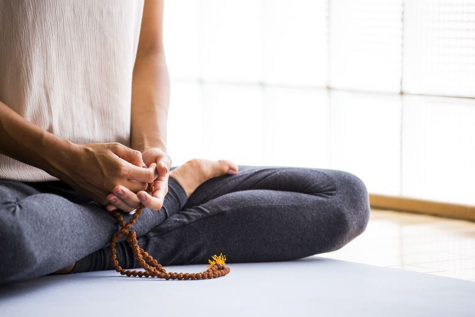
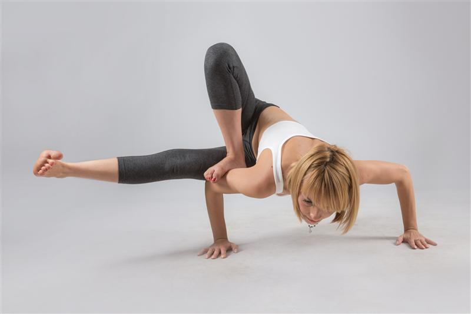
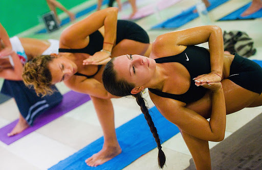
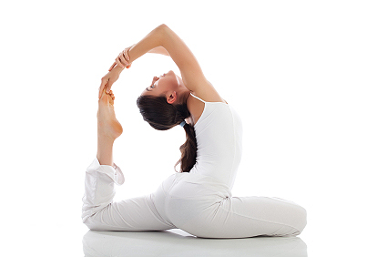

Joogan eri muodot – mikä sopii juuri sinulle?
(Emmi Maaranen)

Kiinnostaisiko sinua rauhallinen hatha-jooga vai kuumassa huoneessa harjoitettava bikram-jooga?
Liikuntasalien ja joogakoulujen lajitarjontaa tutkiessa pää voi mennä hiukan pyörälle – mitä tarkoittavat bikram- tai yin-jooga? Joogaopettaja Sina Varheen mukaan yleisimmät, Suomessa tarjolla olevat joogamuodot ovat hatha-, astanga-, bikram- ja klassinen jooga. Lisäksi tarjolla on myös muun muassa yin-joogaa ja sivananda-joogaa.
Hatha-jooga
Hatha-jooga on rauhallista joogaa, jossa keskitytään asentojen eli asanoiden lisäksi oikeanlaisen hengityksen löytämiseen. Astanga-jooga on puolestaan liikunnallisesti vaativampi muoto, jossa siirrytään asanasta toiseen ilman välirentoutusta. Hengitys on tärkeässä osassa astanga-joogasssa kuten kaikissa muissakin joogamuodoissa.
– Hatha-jooga on katto kaikille eri joogamuodoille. Joogasta puhuttaessa puhutaan yleensä hatha-joogasta, jonka alla on suuri määrä eri suuntia. Esimerkiksi astanga-jooga on hatha-joogan erittäin dynaaminen muoto, Varhee kertoo.
Bikram-jooga
Suomessa voi harrastaa myös bikram-joogaa, joka on niin sanottu lämpöjooga. Bikram-joogaa tehdään lämpöisessä, noin 40-asteisessa huoneessa, Varhee kertoo.
Varheen mukaan bikram-jooga sopii paremmin ihmisille, jotka ovat harrastaneet jo hiukan enemmän joogaa. Sitä ei suositella myöskään sydän- tai verisuonivaivoista kärsiville.
– Itse pidän bikram-joogasta sen takia, että Suomessa on yleensä niin kylmä. Kylminä vuodenaikoina on ihanaa mennä lämpimään saliin myöhään illalla. Nivelet lämpenevät heti, sillä 38 astetta on sisätiloissa aika korkea lämpötila. Lämpö rauhoittaa ja rentouttaa. Bikram-jooga on tullut Hollywoodin sen takia, kun megaluokan staroilla ei ole ollut aikaa lämmitellä, Varhee paljastaa.
Klassinen jooga ja sivanada-jooga
– Asanat tehdään klassisessa joogassa hyvin määrätyllä tavalla. Se on ikään kuin akateeminen tapa tehdä joogaa ja hyvin haasteellista. Kyseessä on myös aika dynaaminen muoto. Esimerkiksi Suomen Joogaliiton jooga on melko lempeää, ja se sopii lähes kaikille. Helsingissä voi harrastaa myös sivananda-joogaa. Tämä on myös dynaaminen joogamuoto, opettaja kertoo.
Sivananda-jooga on fyysisesti vaativampaa kuin hatha-jooga, muttei yhtä vaativaa kuin astanga-jooga.Yin-jooga on suhteellisen uusi joogamuoto Suomessa. Se pohjautuu enemmän kiinalaiseen perintöön, mutta on myös hyvin vanha joogatyyli. Yin-jooga on rauhallista, ja siinä tehdään monen minuutin pituisia venytyksiä. Se on hyväksi sidekudoksille.
-
Varhee suosittelee ensimmäiseksi joogaksi alkeiskurssia, jossa keskistytään hatha-joogan perusteisiin. Alkeiskurssilla voi opettajan kanssa keskustella, mitä joogaa opettaja suosittelee juuri sinulle.
– Itse pidän joogassa hyvin tärkeänä, että löytäisi heti oikean opettajan. Oikea joogamuoto kyllä löytyy, kunhan on ensin oppinut perusasiat joltain hyvältä opettajalta. Kyllähän monet aloittavat dynaamisella joogalla, mutta jos haluaa rauhassa perehtyä joogaan, niin klassinen hatha-jooga on se, mistä kannattaa aloittaa. Se on vähän rauhallisempaa ja eikä heti niin haasteellista, hän sanoo.